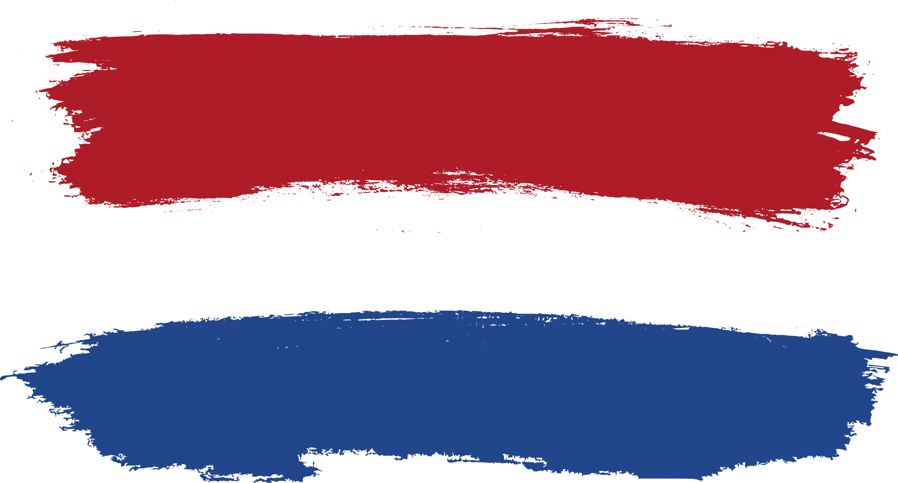

Why the Netherlands?
It's good to know why you would want to start studying on an other country.
Where you don't know anybody and where you cannot speak the local language.
To simply put it, it's because you want to see how your life could be if you
would take that next step, and that's exactly what I did. And now after being here for few months I can
say that I do not regret it at all.
Why ICT-HBO?
I did ask this same question from myself when I 1st applied for the
Helsinki Business College
back in 2017.
Why did I study to become a datanome?
(Vocational Qualification in Business Information
Technology).
And the first reason is that I have always wanted to do something with
computers.
But when thinking more abou it maybe it was because I have always liked about
the known and unknown of possibilities that what you can you with computers.
I also always wanted to create my own game,
and that's why I studied to became a game developer.
I want to get better in coding, or understanding the code.
My previous 4 years of working experience with MySQL have gotten me really close
to databases and understanding how they are connected to the
front-end and back-end as well.
But not just that I also wanted to be able to create what I was able to imagine,
and just the feeling when you have created a game that looks and feels just like
you
is the best reward that I could ever hope to get.

What are your future goals?
My future goals are the following
- Start the school
- Get to know more people and build connections
- Study hard
- Have fun - Possibility of kalsarikännit
- Graduate from the school
- Get a job within the field - connections?
- See what the future holds